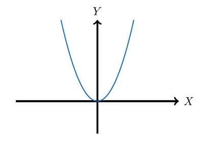
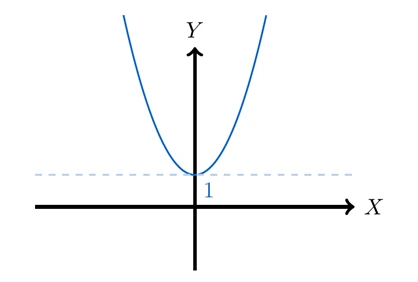
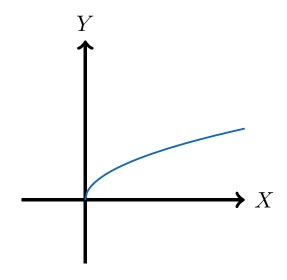
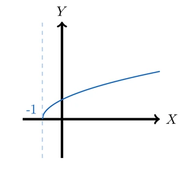

Desplazamiento Vertical
Sumar una constante a una función desplaza verticalmente su gráfica; hacia arriba si la constante es positiva y hacia abajo si es negativa.
En general, suponga que conocemos la gráfica de \(y = f(x)\). ¿Cómo obtenemos de ella las gráficas de lo siguiente?
\(y = f(x) + c\)
\(y = f(x) - c \quad (c > 0)\)
La coordenada \(y\) de cada punto en la gráfica de \(y = f(x) + c\) está \(c\) unidades arriba de la coordenada \(y\) del punto correspondiente en la gráfica de \(y = f(x)\). Por tanto, obtenemos la gráfica de \(y = f(x) + c\) simplemente desplazando la gráfica de \(y = f(x)\) hacia arriba \(c\) unidades. Del mismo modo, obtenemos la gráfica de \(y = f(x) - c\) desplazando la gráfica de \(y = f(x)\) hacia abajo \(c\) unidades.
Ejemplos
Ejemplo 1: Transformación de una Función Cuadrática
Dibuje un bosquejo de la gráfica de la función \(f(x) = x^2 + 1\).
Paso I: \(x^2\). Identificamos y graficamos la función elemental que sentará nuestra base.
Paso II: \(x^2 + 1\). Trasladamos la función hacia arriba en 1 unidad.
Paso III: Identificamos el dominio y el rango.
\[ \text{Dom}(f) = \mathbb{R}, \quad \text{Rango}(f) = [1, +\infty) \]
Ejemplo 2: Transformación de una Función Raíz Cuadrada
Dibuje un bosquejo de la gráfica de la función \(f(x) = \sqrt{x+1}\).
Paso I: \(\sqrt{x}\). Identificamos y graficamos la función elemental que sentará nuestra base.
Paso II: \(\sqrt{x+1}\). Trasladamos la función hasta el punto donde se anula el argumento, es decir, hasta el punto donde \(x + 1 = 0\). Por lo tanto, se traslada hasta \(x = -1\).
Paso III: Identificamos el dominio y el rango.
\[
\text{Dom}(f) = [-1, +\infty),
\quad \text{Rango}(f) = [0, +\infty)
\]